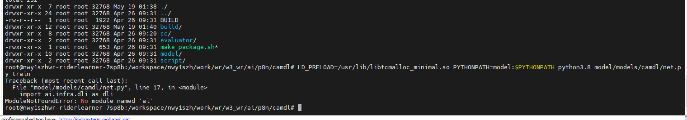
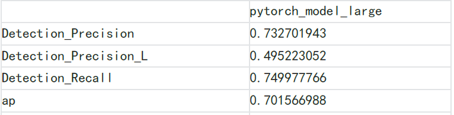
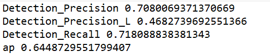
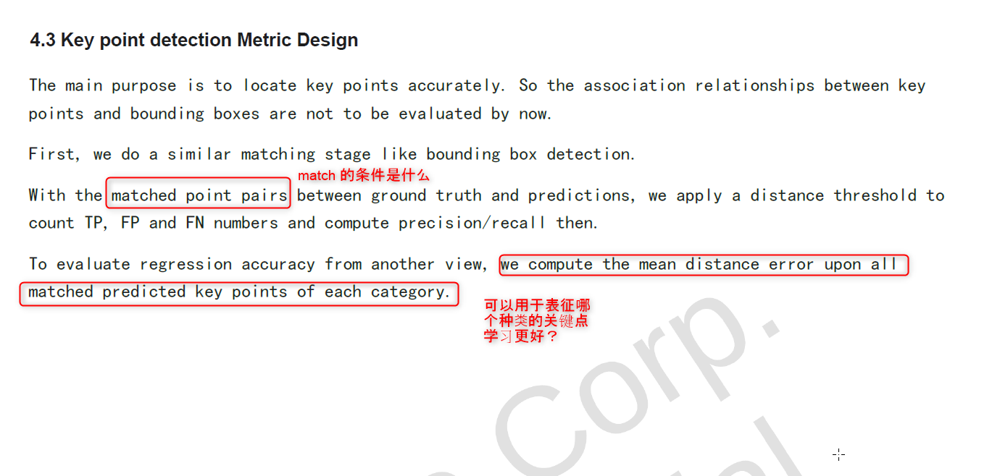

95_issuses [Record of acceptance issues]
2.1. Image View MTCNN
The document code is not corresponding, the code lacks the FREESPACE module, and the detening network structure is not corresponding. It is required to update the detailed and accurate document. WANG Yanan (XC-AS/PJ-WIN-PER2)
Stagea data is not corresponding to the label format entered by the code network, and requires the conversion script of Label and Image 。WANG Yanan (XC-AS/PJ-WIN-PER2)
The definition of Angle in label and which coordinate system is Box3D, you need to provide detailed description of the field of Label. WANG Yanan (XC-DX/PJ-W3-PER2
Analysis of the coding method of yaw and yaw4 in the network?What is the purpose? WANG Yanan (XC-DX/PJ-W3-PER2
What is the purpose of the Radius_depth output when is_depth_model = true? WANG Yanan (XC-DX/PJ-W3-PER2
After the focus of depth_scale, it is coupled with img_size. What is the intention? WANG Yanan (XC-DX/PJ-W3-PER2
Is there any additional data enhancement processing except for the Resize, Normalize and Standard in the code? WANG Yanan (XC-DX/PJ-W3-PER2
5.19 update
make_package Failed
Can't find setup.bash
- 
Summary: Find a technology to run with us, otherwise it cannot be accepted.
2.2. BEV/Camera Prediction
AOS deployment code should provide a corresponding ONX model to verify whether the processing before and after processing is consistent with the training code user-42e3d 25 Apr 2023
Does the training code contain the code of the transfer onnx model?There is no relevant introduction in the document. user-42e3d 25 Apr 2023
The detection result input featured in the document is 40, and the training code is 41?Enter 29 -dimensional @Deng zhonghao in AOS code user-42e3d 27 Apr 2023
Full data training, 3 points for reappearing indicators: @Deng zhonghao 27 APR 2023
Use the indicators in the document

Reap indicator (training code: pytorch_model_large)

There is no step in the training code that reflects the alignment of 5 frames, but only in the AOS code?@Deng zhonghao 05 May 2023
When is the current Campred Model training set?@Deng zhonghao 05 May 2023
About input features Object-wise Feature Vector Among them, Camera Name EmbeDding (4-Dimention Binary Vector) and Object Category Embedding (4-DIMENTION) coded?@Deng zhonghao 05 May 2023
In AOS code, the target of the Oion's distance is greater than 256m. Why choose a preset of 256M? user-42e3d 06 May 2023
Explanation of the meaning in MAP?Key and value. user-42e3d 06 May 2023
Used for Bev/Camera Prediction model training Stage-A Where is the data?how to use?@Deng zhonghao 11 may 2023
2.3. Lane detection
According to the document, the Lane Detection code has not changed from MS3
POLE's recall rate, DASH's recall rate, dual -line Precision RECALL indicators are lower than the report value
2.4. BEV/Lane Prediction
5.6
The Metric data in the document is exactly the same as MS3, and the correct data needs to be provided
Use the/driving/current/preception_ms4_delivery/code/lanepred/checkpoint to test. The recall precision is 0, Endpoint_err is nan
Train 200,000 ITER with the default Config, EVAL performance is extremely low
/DataSet/Driving/Preception_MS4_DELIVERY/CODE/LANEPRD/DATA/SUBSAMPLE_Table is very small. Do you need to use Sample_table?
2.5. Traffic Light
Traffic Light Rosbag analysis, the current red and green light recognition effect is poor, and the specific visible document:
The necessary script lacks the full link:
At present, the script processed from MTCNN to TL_DETECTOR, from TL_DETECTOR to TL_DECIDER script is not provided
There are errors in design doc, you need to update
If the output is not updated, it should be added with DIGIT
What should stage a data red and green lights use
Where is the quantification code?
What is the purpose of the TL DeCider model to add Lane Detection Feature?
Bundle Pose feature PE, it will lose the information of the POSE itself. Why do you do this?
There are still errors in the latest DESIGN DOC TL Decider model structure diagram , There are errors in the dimension of this time server
 What are the two positions circled in the figure?
What are the two positions circled in the figure? The latest model Latender is not updated
0509 issue
How is Bulb's labeling?
This test case: Red circular light, expects output Right direction is also red, the red and green light rules that do not meet the actual scene
How is the iScurrenTintersections be used in the figure below?
What does it mean not to inference in the figure below?
The number of the same lamp with the "43" of the following two places is not uniform. How can they be marked in the end?
Is the Locator.cc in AOS code useless? Where is the front processing of the local part?
0515 issue
AOS code has no DIGIT output
There is no DIGIT output in the Python model, but there is DIGIT Head, but there is no DIGIT output in Predict
What is the role of Voting Head?
2.6. Traffic Sign
Container environment lacks Pydot and Graphviz, and cannot be installed. WANG Cong (BCSC/EPA1, XC-AS/PJ-WIN-PER2)
The path in the Train_Demo.list file is the absolute path output output output, which needs to be replaced. WANG Cong (BCSC/EPA1, XC-AS/PJ-WIN-PER2)
Use DEMO data to reproduce three points of AVERAGE PRECISION, Recall, F1 score, 2-3 points. LI Chen (XC-AS/PJ-WIN-PER2)
DESIGN DOC and code are involved and need to be updated to the latest version. WANG Cong (BCSC/EPA1, XC-AS/PJ-WIN-PER2)
Label doc and code are involved. The ID of the category is based on the code or Label. For example, the ID58 is arrow_right_with_uturn in the label doc, but it is not in the code. LI Chen (XC-AS/PJ-WIN-PER2)
2.7. CarNet
Carnet code is not updated from MS2 to MS4: 0426 I have replied and did not update ；GUO Dashan (XC-AS/PJ-WIN-PER1)
The problem of the lamp+door detection module is as follows:
It is known that the CONFIG in the 0310 packing code deleted the classification head other than BRAKE BRAKE. The problem is as follows:
0426 During the meeting CANGQING said , But the config file under this branch retains left_right/front_tail/light_on/door_status:
0508 has replied, The state after the next delivery is deleted;
Regarding the other four deleted classification heads, the question is as follows:
If the DOOR_STATUS classification head is deleted, how can the door be judged in the carnet of the car?
If the Front_tail classification head is deleted, but the minimum requirements for the labeled ( 20230105 MS3 acceptance verification issues meeting - wave 3 development - Docupedia (bosch.com)）：
Is there any labeling in the data in the data?
0426 When communicating CANGQING replied to retain the door detection of LAD L L IGHT Orientation, the purpose is to filter the lights of the non -target vehicle ；
So where is the code for filtering non -target vehicles?Please explain.
Regarding the door detection category, there are four categories in the labeling document: Normal DOOR/Slide Door/Trunk Door/Special Door, but only two categories are detected in the code: Normal Door and Trunk Door;
This question was passed in MS3 before, but there was no positive reply at that time, but it was verbally promised to confirm it;
Is there two categories of Slide Door and Special Door in the labeling data?
Previous MS3 conference text recorded in 20221222 MS3 acceptance verification issues meeting - wave 3 development - Docupedia (bosch.com)；
Wen Yuan saw the code of the FP16 conversion this time, but did not find the code deployed to the int8 accuracy. Can it be provided?
Wenyuan has replied to this time without changing INT8, only the model to switch to FP16 ；
So can Wen Yuan give the time -consuming test results in different precision models in the report?
How can I deploy it in AOS after training the carnet model?
At present, there is only a model training part in the Python code, but the data is not clear, and the documentation is not explained.
Whether it can explain the C ++ code such as the front/post -processing/calling reasoning, which path is roughly to find the corresponding.
0508 has replied: The deployment is to replace all the model file names.Previous processing AI/P8N/UndersTanding/CSDETECT/Preprocessor, Model reasoning AI/P8N/UNDERSTANDINGING/CSDETECT/DETECTOR model. signal_detector.cc built_result function ``
Questions about AOS code:
The document just said that the screening target was screened according to the car category (car/trucking) as the input, but the processing logic of the processing logic in Preprocessor/VEHICLE_SELECTOR.CC is quite complicated. Can it be explained in the document?
For example, what is the coordinate system in the picture on the right, and what special processing did Truck do? Do you need to care about the turning light for other types of cars?
2.8. Road Marker
In the RoadMarker Readme delivered by MS4, only the instructions and results of the SEGMENTATION sub -task are not the sub -task.Please make up for Wenyuan as soon as possible. WANG Cong (BCSC/EPA1, XC-AS/PJ-WIN-PER2)
The last part of Readme is not reflected in the code. WANG Cong (BCSC/EPA1, XC-AS/PJ-WIN-PER2)
Readme：
Codes:Is there a radius during key points? YANG Chen (XC-AS/PJ-WIN-PER2)
- 
MAPDL is a simple multi -task, but the sample ratio of the SEGMENTATION and Detection training files in the configuration file is 1: 1. Has this ratio has been verified?What proportion is taken? WANG Cong (BCSC/EPA1, XC-AS/PJ-WIN-PER2)
Wen Yuan replied: The sampling ratio did not deliberately match.The task correlation is not great.The key point of SIGN is not classified, and unity is regarded as a class.Does this meet the demand of RB? WANG Cong (BCSC/EPA1, XC-AS/PJ-WIN-PER2)
Wen Yuan replied: The demand finally Align becomes a category.
2.9. Image ODD
Detail_design indicates the IMAGE ODD C ++ interface, and no examples of calling the interface are not given. YANG Junyan (XC-AS/PJ-WIN-PER1) 26 Apr 2023
-
Explanation is too simple to directly understand the corresponding relationship between changes and system requirements YANG Junyan (XC-AS/PJ-WIN-PER1) 26 Apr 2023
Is there a clear definition of the ODD input camera?Do you use fish eyes or forward view?Does the data set cover the input type? YANG Junyan (XC-AS/PJ-WIN-PER1) 26 Apr 2023
According to the test set, it is mainly the front vision. The test results do not cover the ODD of fish eyes. Do not consider this problem when designing a data set?
The IMAGE path in JSON is written to death.You need to provide a script to generate JSON or provide DataSet_root options to configure.It is currently not trained. YANG Junyan (XC-AS/PJ-WIN-PER1) 26 Apr 2023
FACE_SUN_LIGHT, FACE_CAR_LIGHT, WATER_ON_GROUND length in cls_config is 3. Only two options are given in the document: yes no.Not 26 APR 2023
Why do some 2 yuan category give three categories and some give 2 categories?How to understand the purpose of such design?26 APR 2023
2.10. Liper3D Whitebox
The following problems are available in LIPER Stagea data acceptance: CHENG Changhao (XC-AS/PJ-WIN-PER2) 27 Apr 2023
The total amount of the data rebate data is very large, the compressed packet is superimposed, it is impossible to distinguish each labeling task.
The label list is only refreshed until November 22nd, and now it has been delivered to April 23rd
The number of delivery frames is unknown, and the number of frames is unknown.
2.11. 3D tracking
User Manual did not see the relevant mirror and Run information. Can Demo and Data 3D Tracking modules run? XIA Sijun (XC-AS/PJ-WIN-PER2) 27 Apr 2023
Need to provide specific quantitative indicators of the Tracking module (MOTA IDS, etc.) XIA Sijun (XC-AS/PJ-WIN-PER2) 27 Apr 2023
2.12 Muti-task
(1) Readme's first step says that you can use Deeplearning-V3 image directly, but the second step in the "How to Package Training Code 'to guide the re-pulling image, whether it is extra or repeated, or in the first step degearning-v3 image imageContinue to use Doker PULL operation.
(2) In the Deeplearning-V3 mirror environment, copy MS4 to the site training Subset DataSet, and modify the config.py path as the local path according to 4.2.1 to explain the code.In addition to the config.py path to modify, what other files need to modify the configuration path.
a. CONFIG.PY content has been modified
According to the implementation requirements readme.md The structure of the Chinese file is inconsistent
2023.04.28
For the problem (1), after the search method is replaced one by one, there are the following problems
(3) No Data Model described in the documentation
(4) There are errors in design documents about depth
DeptH and Frespace content are the same
(5) There is no freespace content in the code
(6) Segmentation design document category 9 category 9 categories, the code actually has 3 categories, and does not indicate which three types are specifically.
2023.5.10
(7) About FreeSpace (Drivable)
About num_point_dim = 6
U/V/FLAG/X/Y/Z meaning of each variable